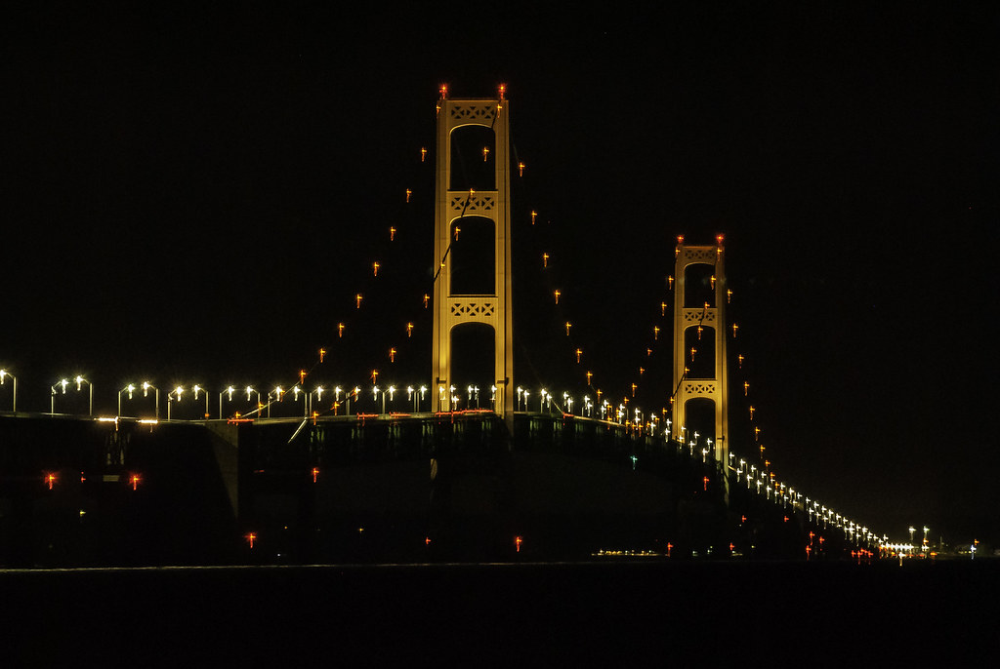

It is a long weekend Saturday(3rd September 2022) evening and I and my roommates were all set to start the trip from Dearborn. We started at 4:00 PM and it is a 4-hour drive to Mackinaw city by car which is 290 miles distance. It is a fun ride with new friends, good music, chit-chat, jokes, and some snacks. We reached Mackinaw city by 9:00 PM and searched for a good restaurant for Dinner. We had a good dinner and were ready to travel Up North to reach our first destination Pictured rocks.
Now, firstly we have to cross the Mackinaw Bridge to make our way to the first destination. It is a suspension bridge spanning the Straits of Mackinac, connecting the Upper and Lower peninsulas of the U.S. state of Michigan. The weather is cool in that region and it is better to carry some sweaters. And the best part of this region is that it is an absolute favorite place to view Michigan Northern Lights. We made a change in our plan to reach paradise for Star Gazing and stay there overnight until sunrise. The sky looked so close that we felt like we are at the edge of the earth. It's an eye feast for all those who watch that view for the first time. And definitely, people will not even blink their eyes once they start looking up.

Next, we made our way to Munising after playing for some time at the paradise. It is a scenic treasure-trove, the Munising area boasts the gateway to Pictured Rocks National Lakeshore, Hiawatha National Forest, Grand Island Recreation Area, numerous waterfalls, and a host of other natural wonders, all in close proximity. So, after reaching the Munising city we went to The pictured rocks cruises and took tickets at the counter for a boat ride which is for 2 hours. It is a cruise along the Pictured Rocks National Lakeshore, which shows magnificent cliffs and rock formations and the pristine beauty of Lake Superior! I would suggest watching the below video than me explaining it in words because it is all-natural beauty that is worth not missing it.
After our breakfast, we set our map directions to Tahquamenon Falls. They are the largest waterfalls in Michigan, and one of the largest in the eastern half of North America. The water is noticeably brown in color from the tannins leached from the cedar swamps which the river drains, leading to the nickname "Root Beer Falls". This waterfall is unique because whenever we hear about any waterfall by default we imagine it as white water. But here it is completely different. This water is a goldish brown color. After parking the vehicle it's a 10min walk inside to reach the waterfall. It has different viewpoints along the water line. we grabbed some pics and set our way to Mackinac Island.
So, the final destination of our trip has arrived. We have to book a ferry to reach Mackinac Island. This will be available in Mackinaw City. A huge arch with a gate is seen named The Gateway To Mackinac Island. This is the entrance to board the ferry. It is open from Morning till Night at 9 PM. So we boarded the ferry and sat on the top deck which is completely open. The air is so cool that we were almost frozen due to the cold winds. But the view around is awesome. On one side there is a huge cable bridge, and on the other side is the coastline of the city and islands. So it's a 15min ride to reach the island.
It's a spectacular view of the island from the ferry. We landed on the island and we got a handout of the places to visit on that island. So to roam around on that island there are two ways, one is through a rented cycle and another is through horse carts. So we took two-seater cycles and started to go along the road which is throughout the coastline. A wonderful experience and ultimate peace. And after taking some pics and the site seeing we stopped at the market area. It contains all varieties of foods and everything is available on that street. The creamy part is that the smell of fresh chocolate is flying in the air. It will definitely make us taste the hot fresh chocolate that is made life in front of us. So, watch the below video for more stuff about Mackinac Island. So, with this our trip ended, and after our dinner we set our way back home.